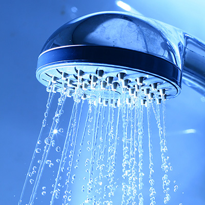

Assignment #1.1

How water supply in a convenient and reliable manner. I love the steam, the pressure of the water and the smell of soap. After a run, a bike ride or a long day at work it relaxes my body and clears the mind. Put the problems in perspective and I'm able to reflect on them in a deeper way. A long shower puts me in a metitative mood washing out all negative thoughts.